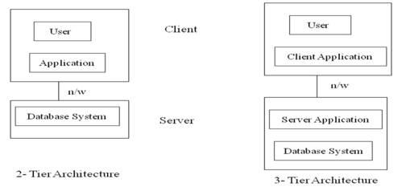

The functional components of a database system can be broadly divided into:
- Storage Manager: It's a program module that provides the interface between the low-level data stored in the database and the application programs and queries submitted to the system.It's responsible for storing,retrieving and updating data in the database.
- It includes:
- Authorization and integrity Manager: Checks for intigrity constrainst and authority of user
- Transaction Manager: It ensures that DB remains in a consistent state dispite system failures
- File Manager: Manages the allocation of space on disk storage
- Buffer Manager: Responsible for fetching data from disk storage into main memory
- Query Processor: It's work is to execute the query successfully
- It include:
- DDL Interpreter: It interprets DDL statements and records the definitions in the data dictionary
- DML Interpreter: It translates the DML statement in a query language into an evaluation plan consisting of low level instructionthat the quey evaluator engine understands
- Query Evaluation Engine: It executes the low level instructions generated by the DML compiler
- 2 Tier Architecture
- Here the application is partitioned into a component that resides at the client machine, which invokes database system functionality at the server machine through query language. The two tiers are: Data server and client Application
- 3 Tier Architecture
- Here the client machine acts as a front end and doesn't contain any direct database calls.
- The client end communicates with an appropriate server,usually via a form interface.
- The application server in turn communicates with a database system to access the data.
